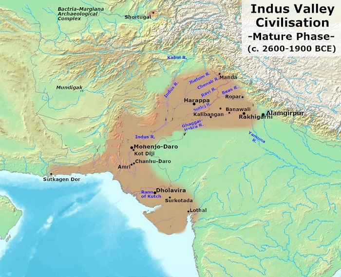

INDUS VALLEY CIVILIZATION
Introduction
Various Names for Indus Valley Civilization
-
Indus Valley Civilisation coined by
John Marshall (director-general of Archaeological
Survey of India), as it flourished along the
Indus river.
-
Harappan Civilisation after the first discovered site,
Harappa by Daya Ram Sahni in 1921.
-
Saraswati-Sindhu Civilisation as most of the sites have
been found along the Indus-Saraswati rivers.
Note: Saraswathi river is identified as modern day
Ghaggar-Hakra River
Extent of Indus Valley Civilization
-
In its mature phase, the civilisation covered parts of
northeast Afghanistan, Pakistan (Sindh, Baluchistan, Punjab),
and India (Punjab, Gujarat, Haryana, Rajasthan, Jammu and
Kashmir, western Uttar Pradesh and Northern Maharashtra).
-
Mundigak and Shortughai are the two sites
located in Afghanistan.
-
Western most site Sutkagendor on river Dasht along
Makran coast (Iran-Pakistan Coastline).
-
Eastern most site Alamgirpur in Uttar Pradesh on river
Hindon.
-
Northern most site Manda in Jammu on river Chenab.
-
Southern most site Daimabad in Maharashtra on river
Pravara.
Important IVC Sites
| City |
Province |
River Bank |
Archaeologist(s) |
| Harappa (1921) |
Pakistan Punjab |
Ravi |
Daya Ram Sahni |
| Mohenjo-daro (1922) |
Sindh |
Indus |
RD Banerjee |
| Sutkagendor |
Baluchistan |
Dasht |
Aurel Stein |
| Chanhudaro |
Sindh |
Indus |
MG Majumdar |
| Koti-Diji |
Sindh |
Sindh |
- |
| Amri |
Sindh |
Sindh |
- |
| Ropar |
Indian Punjab |
Sutlej |
YD Sharma |
| Lothal |
Gujarat |
Bhogava and Sabarmati confluence |
SR Rao |
| Kalibangan ('Black Bangles') |
Rajasthan |
Ghaggar |
A Ghosh |
| Alamgirpur |
Uttar Pradesh |
Hindon |
YD Sharma |
| Banawali |
Haryana |
Ghaggar |
RS Bisht |
| Dholavira |
Gujarat |
Luni |
JP Joshi |
| Surkotoda |
Gujarat |
- |
JP Joshi |
| Rakhigarhi |
Haryana |
Ghaggar |
Amarendra Nath |

IVC Archaeological Sites
Town Planning
-
A unique feature was the grid system i.e. streets
cutting across one another at right angles, dividing the town
into large rectangular blocks.
-
The towns were divided into two parts: upper part or citadel
and lower part.
-
The fortified citadel on the Western side, housed
public buildings and members of ruling class.
-
Below the citadel on the Eastern side, lay the
lower town inhabited by the common people.
-
They had an excellent drainage system connecting all houses to
the main street drainage made of mortar, lime and gypsum and
covered with large brick slabs and equipped with 'Manhole' for
easy cleaning.
-
Houses were often of two or more storeys. No window faced the
streets and the houses had tiled bathrooms. Some houses had
their own wells.
-
There were lamp-posts at intervals. They used burnt bricks of
good quality and the unique feature of this brick was its
identical ratio of
1:2:4 in terms of thickness:width:length across all
Harappan structures.
-
The Great Bath (Mohenjodaro) was presumably used for
religious bathing. Steps at either end leads to the surface.
There were changing rooms alongside.
-
The Granaries (Harappa): six granaries in a row were
found in the citadel at Harappa.
Economy
Agriculture
-
It was the backbone of the civilisation. The soil was fertile
and the river Indus, being a perennial river provided water
throughout the year.
-
They used wooden ploughshare (ploughed field found at
Kalibangan) and stone sickles for harvesting. Iron was not
known to them.
-
Crops Produced: wheat, barley, dates, peas, sesamum,
mustard, millet, ragi, bajra and jowar. At Lothal and Rangpur,
rice husks were found. Sugarcane was not known to Indus
people.
-
They were First to Produce Cotton in the world, which Greek
called as Sindon.
Domestication of Animals
-
They domesticated buffaloes, oxens, sheep, asses, goats, pigs,
elephants, dogs, cats etc.
-
Remains of Horse were found at Surkotada and of rhinoceros at
Amri.
-
Lion was not known to Indus people. Cow was known to them but
was not much important.
Trade
-
Agriculture, industry and forest produce provided the basis
for internal and external trade.
-
Trade was based on barter system. Coins were not
evident. Bullock carts and boats were used for transportation.
-
Weights and measures were made of limestone, steatite etc.
generally in cubical shape. They were in multiple of sixteen.
Decimal system was known to them.
-
Foreign trade flourished with Mesopotamia or Sumeria (Iraq),
Central Asia, Persia, Afghanistan and Bahrain.
-
Sumerian text refers to trade with Meluha (Indus).
Dilmun (Bahrain) and Makan (Makran coast) were
two intermediate stations.
-
Lothal (artificial dockyard), Surkotada, Sutkagendor, Balakot,
Dholavira, Daimabad were coastal towns of the civilization.
Major Exports
Major Exports were agricultural products, cotton goods,
terracotta figurines, pottery, steatite beads (from Chanhudaro),
Conch-shell (from Lothal), ivory products, copper etc.
Major Imports
| Imports |
From |
| Gold |
Afghanistan, Iran, Kolar (Karnataka) |
| Copper |
Khetri (Rajasthan), Baluchistan |
| Silver |
Afghanistan, Persia (Iran), South India |
| Tin |
Afghanistan, Iran |
| Lapis lazuli |
Afghanistan |
| Steatite |
Iran |
| Lead |
Rajasthan, South India |
Arts and Crafts
-
Harappans used tools made of stone and bronze. Bronze was made
by mixing copper (from Khetri) with tin.
-
Beads and jewellery of gold, silver and precious stone were
made. There were bead-making factories at
Chanhudaro and Lothal.
-
Pottery: Both plain (red) and painted (red and black)
pottery was made. Pots were decorated with human figures,
plants, animals and geometrical patterns were painted over it.
-
Seals were made of steatite. Pictures of one horned
bull, buffalo, tiger, rhinocerous, goat and elephant are found
on most of the seals. They marked ownership of property.
Important Seals: Pashupati seal found from Mohenjodaro
and unicorn seal.
-
Images: Bronze image of dancing girl (identified as
devadasi) and stone steatite image of a bearded man (both are
obtained from Mohenjodaro).
-
Terracotta Figurines: Terracotta is the Fire baked
clay. It was used to make toys, objects of worship, animals,
toy-carts etc.
Pashupati Seal, Mohenjo-Daro
Script
-
It was pictographic in nature. Fish symbol is most
represented.
-
It was written from right to left in the first line and then
left to right in the second line. This style is called
Boustrophedon.
Religious Practices
-
Harappan civilisation is considered as a secular society as
no temples have been found. Sacred ritual spots
included the Great Bath at Mohenjo-Daro.
Idolatry was practiced. The Harappan people generally
worshipped:
- Mother goddess as Chief Female Diety.
-
Pashupati Mahadeva or proto-Shiva as Chief Male Diety.
-
Indus people believed in ghosts and evil forces and used
amulets for protection against them.
-
Fire altars are found at Lothal and Kalibangan. Evidence of
snake worship is also found.
- Swastika symbol originated here.
Decline of the civilisation
The Harappan culture flourished till about 1900 BC, then it
began to decline. There is no unanimity among historians,
regarding the exact reason for the decline of this urban
civilisation. Historians have three prominent theories in this
context:
-
Conquest: It is possible that the people from this
civilisation were completely overrun by people from the
Central Asia (Aryans).
-
Environmental Disaster: It's possible that they
brought about their own end by destroying their environment.
-
Earthquake: The most interesting theory is that a
massive earthquake changed the course of the rivers so much
that a lot of the tributaries dried up. Without adequate water
supplies for irrigation, the cities couldn't sustain
themselves, so people literally picked up and left for greener
pastures.
Different theories and their proponents:
| Views |
Proponents |
| External Aggression |
Wheeler, Piggot and Gordon Childe |
| Inundation (over-population) |
MR Sahani |
| Epidemic |
KVR Kennedy |
| Tectonic Disturbances (e.g. Dholavira) |
Marshall and Raikes |
| Climatic change |
Aurel Stein and AN Ghosh |
|
Deforestation, Scarcity of Resources, Ecological
Imbalances
|
Fairservis |
| Flood (e.g. Mohenjodaro) |
Marshall, SR Rao, Maickey |
|
The Destruction due to change in course of River Ghaggar
|
GF Hales |
Important Archaeological Finds
| Cite |
Archaeological Finds |
| Harappa |
Two rows of six granaries with brick platform, clay
figures of Mother Goddess, wheat and barley in wooden
mortar, copper scale and mirror, dice.
Sculptures: Dog chasing a deer (bronze), nude
male and nude dancing female (stone), red sand stone
male torso.
|
| Mohenjodaro |
The great bath, The great granary (largest building),
multi-pillared assembly hall, proto-Shiva seal, clay
figures of Mother Goddess, Dice, Mesopotamian seals.
Sculptures: Bronze dancing girl, steatite image
of bearded man.
|
| Kalibangan |
Ploughed field, bangle factory, wheels of a toy cart,
bones of camel, fire altars.
|
| Chanhudaro |
Only city without citadel, Terracotta bullock cart.
|
| Amri |
Actual remains of rhinoceros. |
| Lothal |
Rice husk, dockyard, fire altars, grinding machine,
tusks of elephant, terracotta figure of horse, teracotta
ship, modern day chess, instrument for measuring angles.
|
| Surkotada |
Both citadel and lower town fortified with stone wall,
remains of horse bones, pot burials.
|
| Dholavira |
Only site to be divided into three parts, Giant water
reservoir, unique water harnessing system.
|
| Rakhigarhi |
Largest Indus valley site in India. |